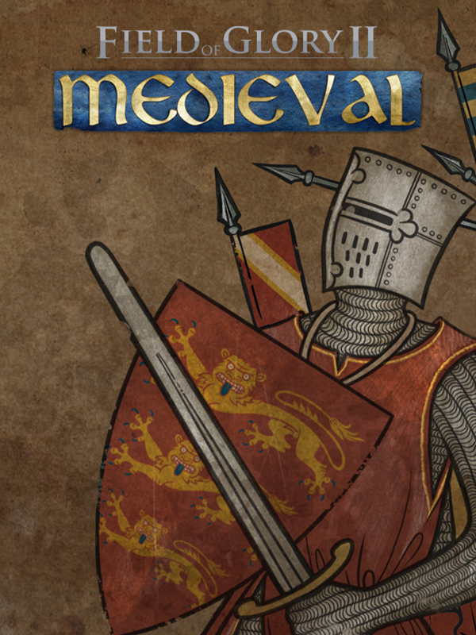

Field of Glory II: Medieval
Field of Glory II: Medieval
Details
|  | |
| Playtime | Not Played |
| Last Activity | Never |
| Added | 16/07/2025 22:43:24 |
| Modified | 16/07/2025 22:43:47 |
| Completion Status | Not Played |
| Library | Steam |
| Source | Steam |
| Platform | PC (Windows) |
| Release Date | 04/02/2021 |
| Community Score | |
| Critic Score | 70 |
| User Score | |
| Genre | Simulator Strategy Tactical Turn-based strategy (TBS) |
| Developer | Byzantine Games |
| Publisher | The Slitherine Group |
| Feature | Multiplayer Single Player |
| Links | Steam Official YouTube Discord GOG Twitch |
| Tag | |
Description

Field of Glory II Medieval is a turn-based tactical game set in the High Middle Ages from 1040 AD to 1270 AD.
This was the heyday of the mounted knight. Armoured from head to toe by the later 12th century, European knights rode heavy horses in tight formation, and delivered a devastating charge with couched lances.

Major themes of the period include the struggles of the Kings of France against the Kings of England and the German Emperors, the English wars of conquest or attempted conquest against the Welsh, Scots and Irish, the Baltic Crusades and the Mongol invasion of Eastern Europe. With dynastic struggles and rebellions by powerful nobles thrown into the mix, Europe was in an almost constant state of war.
Field of Glory II Medieval allows you to take command of the armies of the Anglo-Saxons and Normans, post-conquest England, France, Germany, Scotland, Wales, Ireland, the Low Countries, the Free Cantons, Denmark, Norway, Sweden, Bohemia, Poland, the Teutonic Knights, the pagan Old Prussians and Lithuanians, Russia, Hungary, the Cumans, Volga Bulgars and Mongols in an endless variety of battles and campaigns set in 11th-13th century North and Central Europe.

Lead your chosen army and its named generals to victory in set-piece historical battles or "what-if" custom battle situations against an AI or human opponent. Choose your forces from historically accurate orders of battle allowing all of the options and variations that would be available to a real general of that nation at any date during the era.
Field of Glory II Medieval has more than 100 beautiful and historically accurate fully animated troop units, each with multiple variations to bring out the colour and variety of the era. Watch the swords flash and the arrows fly! Count the cost of victory or defeat as bodies litter the battlefield.

Field of Glory II Medieval has a campaign system that concentrates on the battles, and allows real strategic decisions without time spent moving armies around a strategic map. Each battle is vital to your progress. Your army will gain experience and elan as it goes from victory to victory against your enemies and their allies.
There are four historically-based campaigns covering major conflicts of the era: The Angevin Empire, The Northern Crusades, Alexander Nevsky and the Mongol Invasions. There is also a sandbox campaign system that allows you to lead any nation (and their historical allies) against any other nation (and their allies) – giving thousands of permutations.
Victory will require determination and tactical mastery.

- Accurate simulation of battle in the High Middle Ages.
- 29 nations and factions covering North and Central Europe from 1040 AD to 1270 AD.
- 57 different army lists allowing historically realistic armies for each of these factions at different dates during the period. In addition armies can include contingents from historical allies. This gives tens of thousands of permutations. You will never run out of new matchups to try.
- More than 100 historically accurate units, built from fully animated 3D troop models.
- Historical scenarios covering key engagements of the period on an epic scale. These include Hastings 1066, Tinchebrai 1106, Trutina 1110, Crug Mawr 1136, The Standard (Northallerton) 1138, Steppes 1213, Bouvines 1214, Otepää 1217, Kalka River 1223, Bornhöved 1227, Lake Peipus 1242 and Kressenbrunn 1260.
- Custom Battle system allows unlimited “what-if” scenarios using historically realistic armies from carefully researched army lists, on realistic computer generated terrain maps. Armies covered include Anglo-Saxons, Normans, post-conquest English, French, Imperial and Feudal German, Lowland Scottish, Highland/Isles Scottish, North and South Welsh, Irish, Anglo-Irish, Low Countries, Free Cantons, Danish, Norwegian, Swedish, Bohemian, Polish, Teutonic Knights, Old Prussians, Lithuanians, Russians, Hungarians, Cumans, Volga Bulgars and Mongols. 12 selectable scenarios include: Open Battle, Enemy expecting Reinforcements, Own side expecting Reinforcements, Flank March, Rearguard, Advance Guard, Kill the King, Escort Baggage Train, Own Side Defending, Enemy Defending, Relieve Besieged Fortress, Enemy Relieve Besieged Fortress.
- Quick Battle mode allows you to quickly select from 65 pre-set matchups between historical opponents.
- Campaign mode allows you to play through historically-based campaign scenarios or “what-if” campaigns between any two opposing nations with thousands of permutations. Each victory increases the experience and elan of your core units. You can give each of them its own unique unit name. Quick to resolve strategic decisions allow you to go straight from one battle to the next without any delay.
- Random map generator produces an infinite variety of historically realistic battlefield maps for custom battles and campaigns.
- Classic turn-based, tile based gameplay.
- Easy to use interface, hard to master gameplay.
- Battles can range from a few units to as many as 80 units per side.
- Named generals who can influence combat and morale of units under their command.
- Single player and multiplayer battle modes.
- Effective AI makes sound tactical decisions.
- 6 difficulty levels allow the challenge to increase as you develop your battlefield skills.
- Numerous different unit organisations, combat capabilities and tactical doctrines allow full representation of tactical differences and developments.
- Mod friendly game system with built-in map editor.
- Multiplayer mode allows historical scenarios and “what-if” scenarios to be played by two players using Slitherine’s easy to use PBEM server.